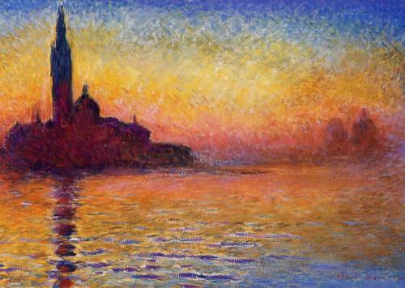
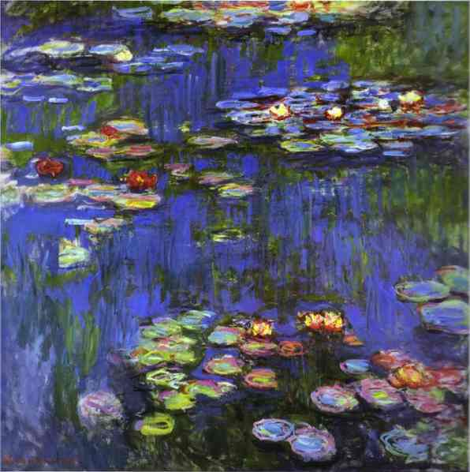
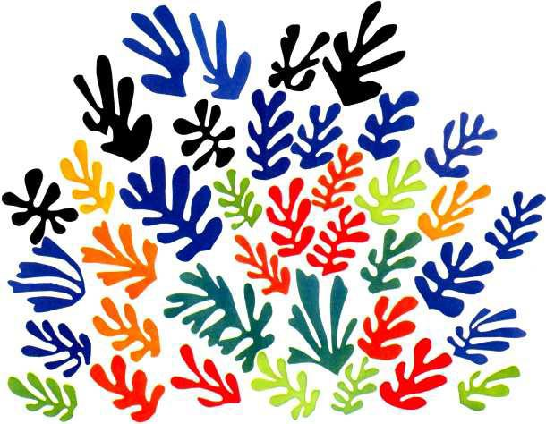
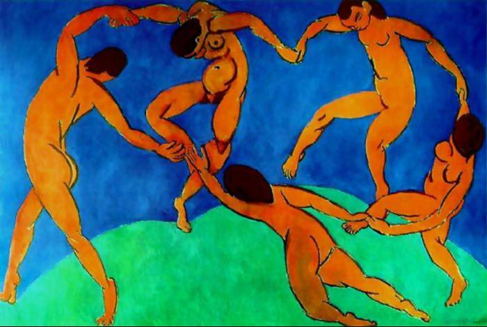
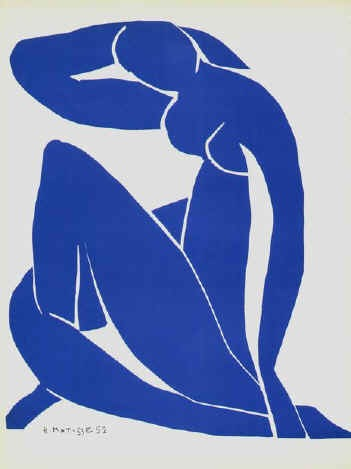

Pieter Brueghel ou Bruegel dit l'Ancien est un peintre brabançon né à Bruegel (près de Bréda) vers 1525 et mort le 9 septembre 1569 à Bruxelles. Avec Jan Van Eyck, Jérôme Bosch et Pierre Paul Rubens, il est considéré comme une des quatre grandes figures de la peinture flamande.
Tableaux de Brueghel l'AncienL'impressionnisme est un mouvement pictural français né de l'association de quelques artistes de la seconde moitié du XIXe siècle. Fortement critiqué à ses débuts, ce mouvement se manifesta notamment de 1874 à 1886 par huit expositions publiques à Paris, et marqua la rupture de l'art moderne avec l'académisme. L'impressionnisme est notamment caractérisé par une tendance à noter les impressions fugitives, la mobilité des phénomènes climatiques, plutôt que l'aspect stable et conceptuel des choses, et à les reporter directement sur la toile. L'impressionnisme eut une grande influence sur l'art de cette époque, la peinture bien sûr, mais aussi la littérature et la musique.
Tableaux de Claude Monet


Tableaux de Matisse   